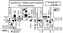

แผนที่ และการเดินทาง

คลิ๊กเพื่อขยายแผนที่
สถานที่ : ห้องประชุมบุณยจินดา กองกำกับการ 3 สวัสดิการสำนักงานตำรวจแห่งชาติ ถ. แจ้งวัฒนะ
การเดินทาง
- รถส่วนตัว
- ทางด่วน : ลงทางด่วนแจ้งวัฒนะ (ปากเกร็ด) แล้ววิ่งไปทางปากเกร็ด ไปกลับรถหน้าหมู่บ้านสายลม (เลยโรงงาน AMD ไปหน่อยนึง) แล้ววิ่งย้อนกลับมาผ่าน AMD ปั๊มน้ำมันบางจาก แล้วจะเห็นสะพานลอยคนข้ามให้ชลอ นิดนึง ให้สังเกตตู้ไปรษณีย์สีแดงทางด้านซ้ายมือ ทางเข้าจะเขียนว่า กองสวัสดิการตำรวจ (เป็นป้ายเล็กๆ) ถ้าท่านเห็นเสาธง ก็แสดงว่าเข้าถูกทางแล้ว ให้วิ่งเข้าไปประมาณ 100 เมตร หาที่จอดรถได้เลยครับ
- หรือโทรถาม 1197
- รถเมล์ : สาย 52, 150, 356, ปอ. 166 หรือโทรถาม 184
- รถ Taxi : บอกคนขับ Taxi ว่าไปกองสวัสดิการตำรวจ ถ. แจ้งวัฒนะ
- เครื่องบิน : ลงเครื่องที่ดอนเมือง แล้วต่อรถ Taxi
- อื่นๆ : โทรถามเจ้าบ่าว 09-662-2733 หรือเจ้าสาว 01-755-2766